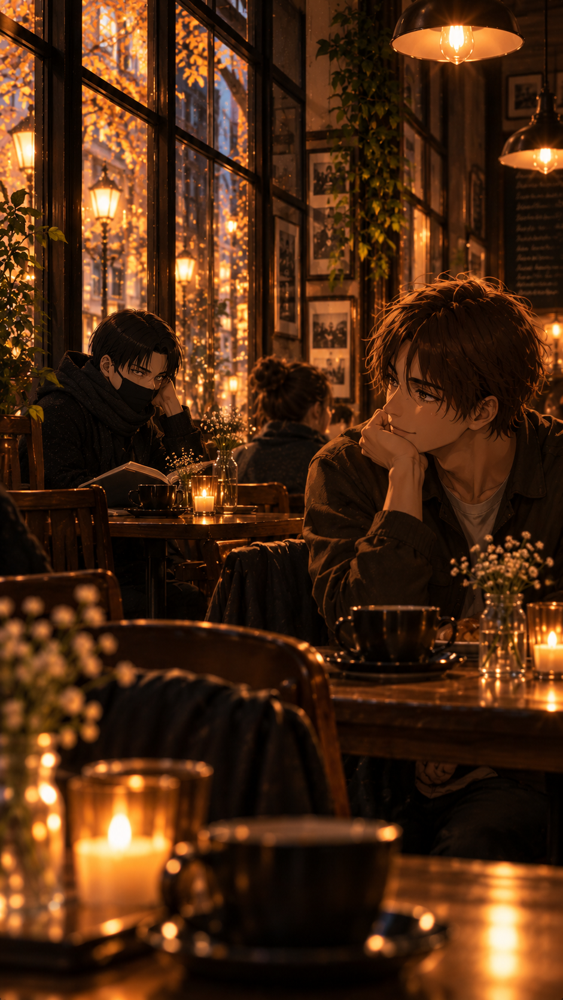

The Shape of Your Absence

The glass had been empty for several minutes. Levi hadn't noticed.
He sat at the far end of the sofa, one elbow resting on his knee, the bottle standing on the coffee table beside a second glass that had never been used. Outside, rain dragged itself down the windows, blurring the lights of the street below into indistinct streaks of yellow and white. The apartment was quiet. Unreasonably quiet.
He reached for the bottle and poured himself another drink.
Whiskey. He couldn't remember when he'd started drinking it without ice. Perhaps when getting up to fetch some had begun to feel like an unnecessary effort.
His phone lay facedown beside the bottle.
He hadn't touched it in hours. That was what he kept telling himself, anyway. The screen had been turned over, checked, turned over again so many times that evening that the gesture had become almost mechanical. Nothing ever changed.
There was no reason it should.
Eren had made himself perfectly clear.
"I'm exhausted, Levi."
Those words had been spoken weeks ago, through a telephone connection that occasionally distorted Eren's voice. Levi could still remember the faint sound of traffic on the other end. A car passing. Someone laughing in the distance. Life continuing somewhere in Germany while the one they'd built between two countries quietly came apart.
"I can't keep doing this. I need to be on my own for a while. I need to figure out who I am when I'm not constantly trying to make everything work."
Levi had argued. Of course he had.
Not because he hadn't heard him. Because he had. And because somewhere beneath the anger, he had recognized the exhaustion in Eren's voice long before Eren finally found the words for it.
There had been too many difficult conversations. Too many evenings spent waiting for a call that came too late, or ended too soon. Too many misunderstandings made worse by the inability to reach across the distance and touch the other person's hand. Every disagreement had seemed to carry the weight of the ones before it. Every reconciliation had become a little more fragile.
Until that last argument.
The one that had gathered every unspoken disappointment, every lonely night, every frustrated attempt to explain something that should have been simple, and brought them all to the surface at once.
"This is too much. I can't live like this anymore."
Levi closed his eyes.
He remembered wanting to ask Eren whether he understood what he was saying. Whether he understood that being alone wouldn't simply mean having more time to himself. It would mean no more good mornings. No more photographs sent for no particular reason. No more falling asleep with a call still running, listening to the familiar sounds of someone existing hundreds of miles away.
But Eren had understood.
That was the part Levi couldn't forgive the memory for.
He lifted the glass to his mouth. The whiskey burned on its way down. He barely felt it.
A few strands of black hair had fallen loose across his forehead, hanging low enough to obscure his eyes. He made no attempt to push them back. His shoulders were rounded, his head bowed, his fingers resting loosely around the glass.
For a long time, he didn't move.
Then a single tear slipped from beneath the dark strands, traced the side of his face, and fell.
It struck the wooden floor between his feet.
Levi stared at the small, darkened spot.
Almost immediately, he dragged the back of his hand across his eyes, irritated by the evidence of something he had been trying so hard to contain. He set the glass down with a dull click and leaned back against the sofa, letting his head fall against the cushions.
It was too much for him, too.
Too much waking up and reaching for a phone that no longer had anyone waiting on the other end. Too much remembering the exact sound of Eren's laughter and realizing he couldn't remember the last time he'd heard it without sadness somewhere behind it. Too much catching himself preparing to tell him something before remembering there was nowhere to send it.
And worse than any of that...
He couldn't stop seeing him.
In strangers passing beneath his window. In the careless way someone pushed their hair behind an ear. In a particular shade of green on a jacket hanging in a shop. In books displayed behind glass, their titles painfully familiar because Eren had once spent entire evenings talking about them.
Eren had never set foot in this apartment.
Yet somehow, he was everywhere.
Levi stared at the ceiling, his breathing slow and uneven.
He had spent so long missing someone who lived in another country that he'd thought he understood what absence felt like.
He hadn't.
Back then, at least, there had always been the promise of another call.
Somewhere along the way, Levi had discovered that he preferred living inside his own head.
It was a strange thing to admit, even to himself. He had never been particularly fond of daydreaming. There had always been something vaguely irritating about people who spent more time imagining their lives than actually living them.
And yet, here he was.
Building entire afternoons out of things that had never happened.
His hand rested beside him on the sofa, palm turned slightly upward. One of his fingers twitched.
Such an insignificant movement.
But in the quiet of the apartment, it was enough.
For one impossible second, he could almost imagine another hand reaching for his. Eren's fingers slipping between his own, warm and familiar despite the fact that Levi had never actually held them.
He had thought about those hands an embarrassing number of times.
The shape of his knuckles. The length of his fingers. The little movements Eren made when he talked, gesturing at the screen as though Levi were sitting directly across from him.
Levi had watched those hands hold books, lift mugs, brush loose strands of hair away from Eren's face. He had imagined what it might feel like to have one resting against his cheek. To catch it absentmindedly while walking together. To reach for it beneath a table without needing to ask permission.
He still imagined it.
His fingers curled slowly against the empty cushion.
Sometimes, the fantasy went further.
He pictured their first meeting.
Not the hurried, awkward encounter he'd once worried about, with airport crowds and luggage and the unbearable pressure of finally standing in front of someone he'd spent so long loving from a distance.
Something simpler.
Eren waiting outside a café, perhaps. Looking down at his phone, unaware that Levi had already spotted him from across the street. His hair falling around his face. One hand tucked into his coat pocket. The other holding a paper cup he'd probably forgotten to drink from.
Levi would recognize him immediately.
Of course he would.
And then Eren would look up.
That was always the moment Levi returned to.
The recognition. The brief surprise. The way Eren's expression would change when he realized that the person walking toward him wasn't another stranger passing by.
He imagined his lips moving around an ordinary greeting. Nothing rehearsed. Nothing particularly romantic. Just Eren saying his name as though it were the most natural thing in the world.
He knew those lips so well.
The slight curve of them when Eren was trying not to laugh. The way he pressed them together when he was thinking. How they sometimes parted before he spoke, only for him to change his mind and smile instead.
Levi had memorized all of it through a screen.
But he had never seen that smile directed at him from across a room. Never watched it grow without a camera flattening the distance between them. Never been close enough to see whether Eren's eyes really did soften the way he thought they did.
He imagined that, too.
The warmth in those green eyes. The way they might catch the afternoon light. The little creases at their corners when Eren laughed without holding anything back.
Eren had always seemed to carry a little sunshine with him.
Even on the worst days. Even when he complained about the weather, about work, about people who walked too slowly in front of him. There was something irrepressibly alive about him, something that made the smallest, most ordinary moments feel worth sharing.
Levi had loved listening to him talk about nothing.
A book he'd discovered. A ridiculous conversation overheard on the train. Something he'd seen in a shop window and immediately decided Levi needed to know about.
He used to wonder what it would be like to spend an entire day beside him. To hear those stories without a microphone. To watch Eren turn his head toward him halfway through a sentence, expecting an answer. To be there when something made him laugh instead of receiving a message about it hours later.
Now he imagined those days with an almost painful precision.
The two of them walking through unfamiliar streets. Eren talking too much. Levi pretending to be annoyed. Their shoulders occasionally brushing. His hand finding Eren's, perhaps so naturally that neither of them would even look down.
In those imagined afternoons, nothing had gone wrong.
There had been no final argument. No exhausted voice asking to be left alone. No silence stretching across the distance until it became impossible to tell whether either of them was still waiting.
There was only Eren.
Smiling. Talking. Reaching for him.
Levi opened his eyes.
His hand was still resting on the sofa.
Empty.
He looked at it for a moment before turning it over against the cushion.
It was becoming easier to imagine a life with Eren than to remember how to live without him.
And perhaps that was what frightened him most.
The realization that the only place he could still have everything he wanted was somewhere he couldn't actually go.
His phone was in his hand before he realized he'd reached for it.
He unlocked it. Stared at the screen. Opened a browser.
Flights to Germany.
There was no particular thought behind it. No carefully considered decision. His fingers simply moved, entering dates, scrolling through departure times, comparing prices he barely registered.
Wednesday evening. Friday evening.
Two days.
Forty-eight hours in a country he'd spent so long wishing he could visit that the idea of actually going there had become almost abstract.
He selected a flight. Then another for the return. Entered his details. Paid.
A confirmation appeared on the screen.
Levi looked at it.
Then set the phone down.
He felt nothing.
No excitement. No relief. Not even the nervousness that should have accompanied the realization that he'd just booked a trip to the country where his former lover lived.
Perhaps because he wasn't going to see him.
That much was certain.
He wouldn't call. Wouldn't write. Wouldn't stand outside Eren's building hoping for a glimpse of him through a window.
He wasn't going to Germany for Eren.
Or rather...
He was going for everything Eren had left behind in his imagination.
The little café with the wooden tables, where Eren had a favorite spot and complained whenever someone else occupied it. Levi knew which table it was. He'd seen it in photographs so many times that he could have described the scratches in the wood.
He wanted to sit there.
Perhaps run his fingers across the surface. Feel something Eren had touched without a screen separating them.
There was the museum Eren loved. The one he'd talked about with such enthusiasm that Levi had once spent an entire evening looking through its website just to understand what had made him so happy.
There were the places where he ate.
The bagel he'd promised Levi they would try together. The ridiculous waffle he'd snapped a picture one afternoon, covered in enough toppings to make Levi question whether there was any actual waffle underneath.
He'd been so damn jealous of that waffle.
Not because he wanted one.
Because Eren had been sitting somewhere in the sunshine, eating something delicious, and Levi had wanted more than anything to be the person sitting opposite him.
There was the chicken, too. The one Eren insisted was better than anything Levi could find in England. An outrageous claim Levi had promised to challenge personally.
The little place where Eren bought his cappuccino. The park he walked through when he needed some air. The streets he knew by heart.
An entire world Levi had come to recognize without ever having set foot inside it.
He wanted to see it.
Not to find Eren.
Just to know what the air smelled like there. What the streets sounded like. Whether the coffee really was as good as Eren claimed. Whether the afternoon light fell across that wooden table the way he told him it did.
He wanted, for two days, to live a small part of the life they had spent so many nights imagining together.
The life that had ended before it could properly begin.
And he knew he had helped destroy it.
His temper. The sharp things he'd said when he felt cornered. The way jealousy had often turned an innocent conversation into an accusation neither of them had deserved.
Eren had his insecurities, too. His fears. His own ways of retreating when something hurt.
They had loved each other.
That had never been the problem.
The problem was that they had never quite learned how to be frightened without frightening each other.
And eventually, love had stopped being enough to make the exhaustion bearable.
Levi picked up his glass.
The whiskey had gone warm.
He drank it anyway.
The days before his departure passed without distinction.
Levi went to work. Answered emails. Bought groceries. Packed a small bag with enough clothes for two nights.
He checked his passport. Downloaded his boarding pass. Reserved a room.
Everything happened with the same quiet efficiency he applied to ordinary errands.
Even at the airport, surrounded by people hugging goodbye, laughing over luggage, and rushing toward departure gates, he felt strangely removed from it all.
He boarded the plane. Fastened his seat belt. Watched England disappear beneath a layer of clouds.
Nothing.
He didn't feel anything when the plane landed, either.
Not while collecting his bag. Not while navigating the airport. Not even when he stepped outside and heard German spoken all around him.
Then, somewhere between the airport and his hotel, he passed a small bakery.
The smell of fresh bread drifted through the open door. A bicycle bell rang behind him. Someone hurried past carrying two paper cups.
Levi stopped.
It wasn't anything remarkable.
Just a street. Just people. Just an ordinary afternoon in a city that had been living perfectly well without him.
But Eren had walked streets like these.
Eren had complained about the weather here. Had bought coffee here. Had stood beneath this same sky and taken pictures of things he thought Levi might like.
For the first time in weeks, Levi drew a breath that seemed to reach the bottom of his lungs.
He could smell the bread. The coffee. The faint dampness of the pavement.
He could feel the cold against his cheeks.
The world had edges again. And it hurt. God, it hurt. But at least he could feel it.
He spent the following day walking.
There was no rush. No schedule beyond the few places he'd quietly saved on his phone.
He visited the museum first.
He wandered through its rooms slowly, stopping in front of exhibits Eren had once described to him. Occasionally, he recognized something.
A painting. A particular display. A detail that had appeared in the background of a picture Eren had taken.
Once, he caught himself smiling. It disappeared almost immediately.
Later, he found the bagel shop. He ordered the lox one Eren had promised him. Sat by the window. Took a bite. It was good. Infuriatingly good. He almost reached for his phone. Almost. Instead, he finished eating and continued walking.
The waffle came next.
He stood in front of the menu for an unreasonable amount of time before ordering the same ridiculous combination Eren had showed him.
It was too sweet. Too large. An absolute mess.
Levi ate the whole thing.
He found the place that sold the chicken, too. And later, the little shop where Eren bought his cappuccino.
By the time he reached the park, the afternoon was beginning to fade.
He walked beneath the trees with his hands buried in his coat pockets, watching leaves scatter across the paths.
He tried to imagine Eren here.
Walking with his headphones on. Perhaps stopping to fight a squirrel. Perhaps sitting on one of the benches with a book. Or touching rocks.
And for a moment, someone ahead of him turned.
Dark hair. A familiar posture. A profile that made Levi's heart give one violent, unreasonable beat.
Eren.
His feet stopped moving.
Before he could think, he stepped behind a tree.
Ridiculous.
Absolutely ridiculous.
Every part of him wanted to look again. To step back onto the path. To call out a name he hadn't spoken aloud in weeks.
Instead, he remained where he was.
When he finally looked, the person was gone.
He couldn't even be certain it had been Eren.
Perhaps it hadn't.
Perhaps he'd simply begun seeing him in Germany the same way he'd been seeing him everywhere in England.
Levi stayed there for another minute, then turned toward the exit.
He saved the café for last.
It was smaller than he'd imagined.
Warm light spilled through the windows onto the pavement, and the familiar wooden tables stood close enough together that conversations overlapped beneath the soft music playing inside.
Levi recognized it immediately.
The counter. The shelves. The little arrangement of plants near the window.
And there... Eren's table. The one he'd showed so often, occupied.
Levi stood just inside the entrance for a moment, then chose a table a little farther away.
He ordered tea.
From his bag, he took out a book.
Eren had recommended it months ago. Had insisted Levi would love it, then spent an entire evening trying to explain why without spoiling the ending.
Levi had bought it shortly afterward. He hadn't opened it until the flight.
Now he rested it on the table, turned to the page he'd marked, and tried to read.
He managed perhaps three paragraphs.
The bell above the entrance rang.
Levi didn't look up immediately.
He heard footsteps. The quiet shuffle of someone removing a coat. A familiar-sounding voice exchanging a few words with the person behind the counter.
His eyes lifted.
And the words on the page ceased to mean anything.
Eren.
Not someone who resembled him. Not another stranger whose hair or posture had played some cruel trick on Levi's exhausted mind.
Eren.
Standing only a few meters away.
Real.
Levi's fingers tightened around the edges of the book.
He lowered his gaze immediately.
His heart was beating so hard that he could feel it in his throat.
He had prepared for this possibility. Or rather, he'd told himself he had.
The mask covering the lower half of his face had seemed like a sensible precaution. The thick scarf wrapped high around his neck, another. Together with his coat, they concealed enough of him that he could almost believe himself unrecognizable.
He had worn them because he knew there was a chance.
A small one.
But a chance nonetheless.
And now Eren was here.
Levi kept his eyes on the book. One line. Two. He couldn't have repeated a single word.
Slowly, without lifting his head, he glanced sideways.
Eren had taken a seat a few tables away. He was alone.
Levi watched him from the corner of his eye.
The way he settled into the chair. The way he pushed his hair away from his face. The small, absentminded movement of his fingers against the tabletop.
He was gorgeous. Effortlessly so.
Not because he'd made any particular effort. Quite the opposite.
His hair wasn't perfectly arranged. There was tiredness around his eyes. His shoulders seemed a little heavier than Levi remembered.
But he was there.
Moving. Breathing. Existing without the strange flatness of a screen.
Levi could see the way the light touched his face. The small changes in his expression when he glanced around the room. The shape of his lips as he thanked the person who brought his order.
He looked exactly like Eren.
And nothing like Levi had ever imagined.
Because no amount of pictures, video calls, or sleepless fantasies could have prepared him for the unbearable simplicity of seeing him sitting there.
He wanted to go to him. Every part of him wanted to.
To stand. Cross the distance. Say his name.
To finally discover what it felt like to be close enough to touch him.
He wouldn't.
Eren had asked to be alone.
Levi had come here knowing that. He had promised himself he wouldn't turn this journey into another demand Eren had to carry.
So he remained in his chair.
Reading a book he wasn't reading.
Watching a man he wasn't supposed to be watching.
And waiting.
For what, he couldn't have said.
Perhaps for Eren to finish his drink and leave. Perhaps for the ache in his chest to become something manageable.
Then another thought arrived.
Someone might join him.
Levi looked toward the entrance.
A friend, perhaps. A colleague. Someone Eren had met in the weeks since their last conversation.
Someone who knew what his days looked like now. Who knew whether he slept well. Whether he was eating properly. Whether he'd finally found the peace he'd been asking for.
Someone who could sit beside him without thinking about flight schedules or time differences.
Someone who could reach across the table and touch his hand.
Levi's jaw tightened beneath the mask.
The door opened. He looked.
A woman entered, shook the rain from her umbrella, and joined an older couple near the counter.
Not Eren's table.
A few minutes later, the bell rang again. Another stranger.
Nobody joined Eren.
He remained alone, occasionally looking at his phone, occasionally staring out of the window.
Levi wondered what he was thinking about. Whether he was happy.
Whether he had been happy at all since the breakup.
Whether, somewhere in the ordinary passage of his days, he ever still thought about England.
About him.
Levi lowered his eyes to the book again.
His phone vibrated against the table.
He almost ignored it.
Then he turned it over.
A message.
From Eren.
For several seconds, Levi simply stared at the name.
His thumb hovered over the notification before he finally opened it.
"That's a lot of fabric just to hide an undercut I happen to be very fond of."
Levi stopped breathing.
Slowly, he raised his eyes.
Across the café, Eren was looking directly at him.
Straight through the mask. Through the scarf. Through every ridiculous precaution Levi had taken to make himself invisible.
There was a smile on his face.
A tired one.
But unmistakably his.